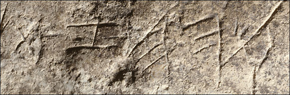

Tel Zayit Abecedary

A 38-pound limestone boulder found embedded in a 10th-century BC wall at Tel Zayit, excavated under Ron Tappy. One face carries all twenty-two letters of the early Hebrew alphabet in sequence over two lines — the earliest complete abecedary ever found, essentially a schoolchild's practice stone. The letter order differs slightly from the later standard, and the reverse side is hollowed like a bowl or mortar.
Biblical Significance
The alphabet behind the acrostic psalms — Psalm 119, built letter by letter — was already being taught in Judah in the days of David and Solomon. This stone is a classroom artifact from the kingdom that produced the Scriptures: somebody sat down, took a sharp tool, and carefully learned the letters that would carry God's word.
Interpretations
Scholars agree the stone carries a complete tenth-century abecedary; debate concerns whether its letter forms are Hebrew, Phoenician, or broadly South Canaanite.